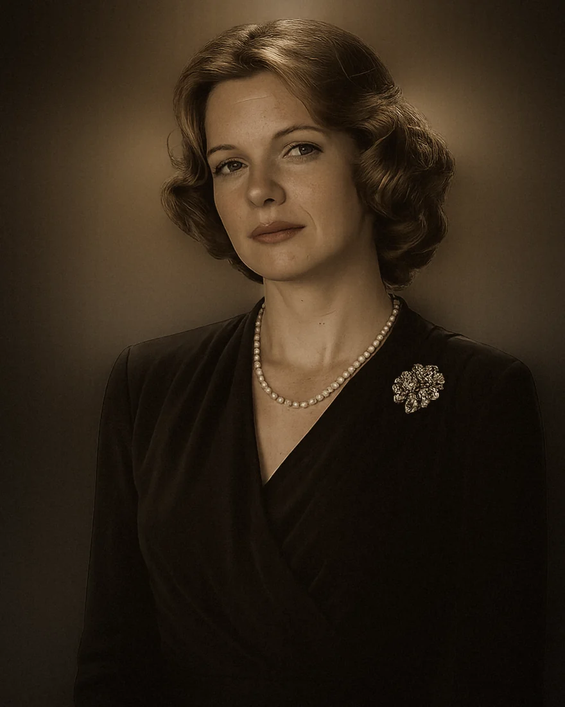

01
INTRO
Una mujer joven, carismática, culta y moderna; profesa un profundo amor hacia Michael Corleone; a través de él, tiene su primer acercamiento a un mundo de ilegalidad al cual siempre fue ajena.
Ejercicio

Una mujer joven, carismática, culta y moderna; profesa un profundo amor hacia Michael Corleone; a través de él, tiene su primer acercamiento a un mundo de ilegalidad al cual siempre fue ajena.
La noticia del atentado contra Vito Corleone, publicada en el periódico, provoca que Michael se marche, dejándola atrás. Ella deberá lidiar con este repentino vacío, debatiéndose constantemente entre mantener la esperanza de encontrarlo y renunciar definitivamente a su relación.
Luego de una larga espera, su amado regresa, y a pesar de su dolor por el abandono, lo perdona, se casan, forman un hogar y ella acepta que su esposo ya no es el mismo hombre del que se enamoró al inicio y asume que ahora es el nuevo líder de la mafia.
Mujer curiosa por saber más sobre la familia de su amado.
Tenía afinidad con la legalidad y desagrado por la vida criminal.
Tenía esperanza y confianza en su amado y en su palabra.
Una mujer paciente y determinada.
Una mujer fiel a sus sentimientos.
Cree en el valor de formar una familia y mantener un hogar.
Su vocación por la docencia y el desarrollo profesional.
El amor y la fascinación que siente inicialmente por Michael Corleone.
Su deseo de mantener una vida tranquila, culta y moderna, alejada del entorno de la mafia.
Decidir si continúa la búsqueda de su amado o se resigna a decirle adiós tras su ausencia.
Graduarse como maestra para ejercer su profesión.
Casarse y formalizar un hogar con el amor de su vida (Michael).
Kay asiste a la boda de Connie como la novia universitaria de Michael y conoce las historias de su familia.
Kay y Michael salen de ver una película durante sus vacaciones de invierno.
Mientras caminan con las compras navideñas, descubren en el periódico el atentado contra Don Vito.
Michael llama a Kay por teléfono desde su habitación para despedirse antes de ir a proteger a su padre.
Tras la huida de Michael a Sicilia, Kay intenta dejarle una carta a través de Tom Hagen, pero este la rechaza.
Michael reaparece tras su exilio y busca a Kay en su lugar de trabajo para pedirle que se casen.
Kay sostiene al bebé en el altar durante el bautizo, mientras los enemigos de Michael son ejecutados.
Michael le miente a Kay negando haber matado a Carlo, justo antes de que le cierren la puerta en la cara.
Mansión Corleone · Teatro Radio City Music Hall · Tienda Best & Co. · Hotel St. Regis · Antigua Catedral de San Patricio · Despacho de Michael
Escuela Ross
Cuando están de turistas por Manhattan y por su hijo.
El abandono de Michael.
Al enterarse de los negocios de la familia de Michael, cuando él vuelve y cuando le propone matrimonio.
Cuando fue a buscar a Michael.
Cuando volvió Michael.
Hacia Michael y hacia su vocación.
Admiraba a Michael por sus logros.
Al regreso de Michael.
“El conflicto central de Kay radica en elegir entre el amor hacia Michael y sus principios morales (legalidad y futuro).”
El Padrino · Kay Adams